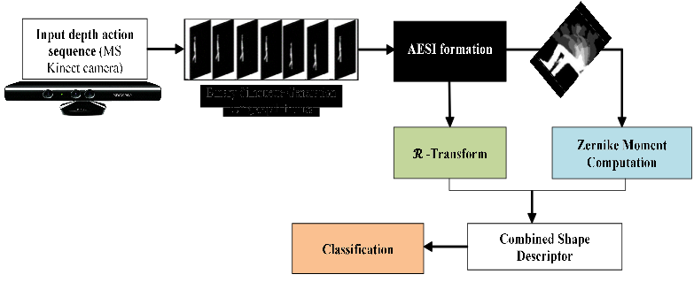
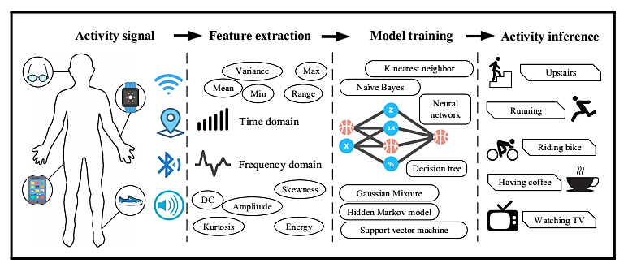
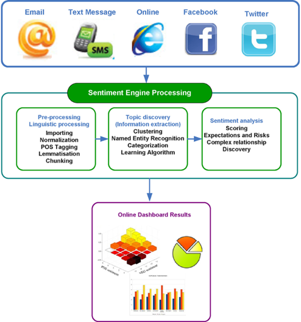
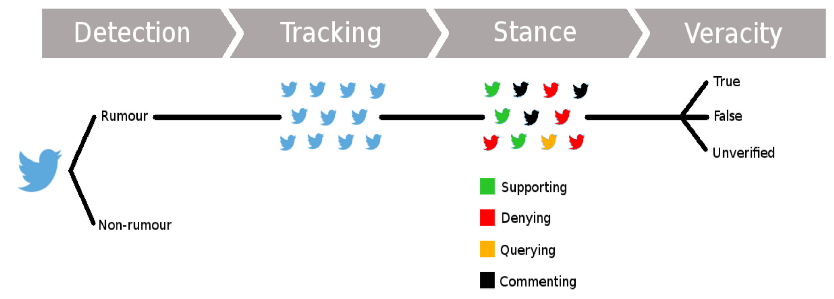
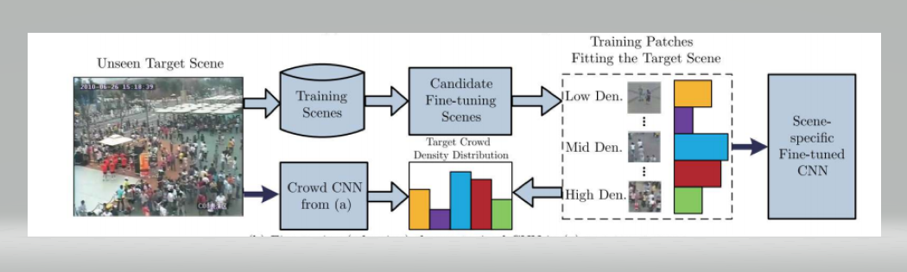

| Project Title | Research Scholar | Goals and Objectives | Project Flow Diagram |
|---|---|---|---|
| Identification of Human Actions in Video Sequences | Chhavi Dhiman | Vision-based action recognition and prediction from videos are has become particularly prevalent topics recently because of their explosively emerging real-world applications, such as visual surveillance, autonomous driving vehicle, entertainment, and video retrieval and human centric problems such as healthcare and eldercare monitoring systems etc. However, there exist some key challenges for real time action recognition such as camera viewpoint, illumination, partial and complete occlusion, clothes worn by the object. In this regard, deep learning based human action recognition methods are emerging as promising solutions to handle real time challenges involved in video analysis. Therefore, the goal is to develop a computer vision based technological solution for smarter real-time video analysis in order to raise the standards of human centric healthcare and eldercare monitoring systems using robust and deeper human action recognition algorithms. |  |
| Human Action and Activity Recognition in Video Sequences | Tej Singh | Vision-based Human activity recognition is becoming a trendy area of research due to its broad applications such as security and surveillance, human-computer interactions, patients monitoring system, and robotics. The key challenges present in videos are clutter background, moving objects, occlusions and changing environmental conditions. Our objective is to proposed novel algorithms and optimisation of technique to deals with current challenges present in activity recognition. |  |
| Sentiment Analysis using Deep Learning | Ashima Yadav | In a world where we generate 2.5 quintillion bytes of data every day, sentiment analysis has become a key tool for making sense of that data by trying to identify and extract opinions within text. This has allowed companies to get key insights and automate all kind of processes. The key challenges involve detecting the subjectivity, tone, context, irony and sarcasm in a sequence of text. Recently, understanding the emotion and sentiment from visual content (e.g., image and video) has attracted great attention, since the sentiment conveyed from visual content can explain or even strengthen the sentiment conveyed from text. Hence, our objective is to address the challenges of text based and visual based sentiment analysis by developing novel algorithms and techniques. |  |
| Analysis, Characterization and Detection of Rumors over Online Social Media using Deep Learning model | Deepika Varshney | In the recent era online social media is used as one of the important medium for sharing thoughts and opinion of an individual. The main reason behind this is it provides a fast way to spread information among public in an easy way, requiring a very low cost of access. Due to that online social media became one of the stepping stone to encourage false information/rumors. People are posting their thoughts openly. The posted thought can influence people in a positive/ negative way. In a negative way it can make a serious impact over society. Breaking news is one of the context having a relation with rumors as information is released gradually, often starting as an unverified information. The problem of automatically detecting rumor over social media is an important research area. The Goal is to develop an efficient solution to early detect and characterize rumors post automatically using deep learning model. This will greatly help society. |  |
| Crowd Behaviour Analysis Using Deep Learning | Gaurav Tripathi | Handling large crowds and anticipating emergent behaviour from them is a modern day challenge for computer vision experts. To assist this research, the prism of deep learning can be applied to the computer vision systems. Although the traits emerged in a crowd gathering are often non-deliberative, the act of crowd impulse may lead to irrevocable crowd disasters. The two-fold increase of carnage in crowd since the past two decades has spurred significant advances in the field of computer vision, towards effective and proactive crowd surveillance. Computer vision studies related to crowd are observed to resonate with the understanding of the emergent behaviour within the crowd arena. Our objective is to propose novel algorithms and optimization of existing solutions to deal with the challenges present in the crowd behaviour domain. |  |